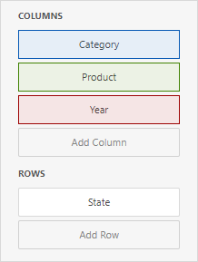
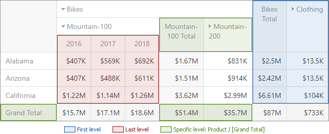

Conditional Formatting
A Pivot dashboard item highlights cells with a certain color, depending on the cell's value. You can calculate a format rule by measures placed in the Values section and dimensions placed in the Columns or Rows section.
You can use hidden measures to specify a condition used to apply formatting to visible values.

Supported Format Rules
Format rules that can be applied to different data item types are as follows:
- numeric
- Value
- Top-Bottom
- Average
- Expression
- Icon Ranges
- Color Ranges
- Gradient Ranges
- Bar
- Bar Color Ranges
- Bar Gradient Ranges
- string
- Value (with the condition type set to Equal To, Not Equal To or Text that Contains)
- Expression
- date-time
- Value
- A Date Occurring (for dimensions with a continuous date-time group interval)
- Expression
- Icon and Color Ranges
- Color Ranges
- Gradient Ranges
- Bar
- Bar Color Ranges
- Bar Gradient Ranges
Refer to the following topic for more information about format condition types: Conditional Formatting in Web Dashboard.
Create and Edit a Format Rule
You can create and edit format rules in the Conditional Formatting section that is located in the following places:
The dashboard item's Options menu
The data item menu
Refer to the following topic for information on how to create and edit format rules: Conditional Formatting in Web Dashboard.
Appearance Settings
You can add an icon to the cells/rows or configure the style for display text or background color. To do this, open the format rule's Condition section and specify the settings:
Appearance
You can select a predefined style or create a Custom Style in the Appearance tab. You can specify the background color, the text color, and the font settings.

Icons
You can select an predefined icon from the Icon tab.
Pivot-Specific Format Condition Settings
Appearance settings are applied to data cells that correspond to a row/column intersection. You can set a new intersection of the row and column or use predefined settings.
Note the following specifics:
- The dashboard does not calculate format rules in a pivot item for percentage values at multiple levels. In this case, the "All Levels" intersection mode is not available.
- If you create a new format rule for a dimension from the Columns/Rows section, the corresponding format condition dialog does not contain any Pivot-specific settings.
The format rule's Miscellaneous section contains pivot-specific options:

| Option | Description |
|---|---|
| Enabled | Enables/disables the current format rule. |
| Intersection Mode | Specifies the level at which to apply conditional formatting to pivot cells. |
| Intersection Row/Column Dimension | Applies the format rule to the specified row/column dimension, if you select the Specific Level as the intersection mode. |
| Apply to Row/Column | Specifies whether to apply the formatting to the Pivot item's entire row/column. |
A Pivot item allows you to specify the field intersection to which a format rule is applied.
| Intersection Level Mode | Description |
|---|---|
| Auto | Identifies the default level. For the Pivot dashboard item, Auto identifies the First Level. |
| First Level | The first level values are used to apply conditional formatting. |
| Last Level | The last level values are used to apply conditional formatting. |
| All Levels | All pivot data cells are used to apply conditional formatting. |
| Specific Level | The specified measures/dimensions are used to apply conditional formatting. |
For example, the Pivot item has three fields in the column area (Year, Category, and Product) and one field in the row area (State):

The image below displays different intersection levels with the applied format rule:

To apply a format rule to the row or column Grand Total, change the Intersection Level Mode to Specific level and set the [Grand Total] value as the intersection row/column dimension.